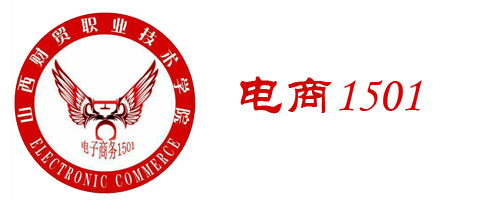

|  | 网站首页 |
个人相册 |
留言版 |
个人日志 |
音乐欣赏 |
好友注册 |

每人的生命里都有一只碗
有一个年轻人去买碗，来到店里他顺手拿起一只碗，然后依次与其它碗轻轻碰击，碗与碗之间相碰时立即发出沉闷、浑浊的声响，他失望地摇摇头。 然后去试下一只碗……他几乎挑遍了店里所有的碗，竟然没有一只满意的，就连老板捧出的自认为是店里碗中精品也被他摇着头失望地放回去了。
老板很是纳闷，问他老是拿手中的这只碗去碰别的碗是什么意思？他得意地告诉老板，这是一位长者告诉他的挑碗的诀窍，当一只碗与另一只碗轻轻碰撞时，发出清脆、悦耳声响的，一定是只好碗。老板恍然大悟，拿起一只碗递给他，笑着说：“小伙子，你拿这只碗去试试，保管你能挑中自己心仪的碗”。
他半信半疑地依言行事。奇怪！他手里拿着的每一只碗都在轻轻地碰撞下发出清脆的声响，他不明白这是怎么回事，惊问其详。
老板笑着说，道理很简单，你刚才拿来试碗的那只碗本身就是一只次品，你用它试碗那声音必然浑浊，你想得到一只好碗，首先要保证自己拿的那只也是只好碗……
就像一只碗与另一只碗的碰撞一样，一颗心与另一颗心的碰撞，需要付出真诚，才能发出清脆悦耳的响声。自己带着猜忌、怀疑甚至戒备之心与人相处，就难免得到别人的猜忌与怀疑。其实每个人都可能成为自己生命中的“贵人”，前提条件是，你应该与人为善。
你付出了真诚，就会得到相应的信任，你献出爱心，就会得到尊重。反之，你对别人虚伪、猜忌甚至嫉恨，别人给你的也只能是一堵厚厚的墙和一颗冷漠的心。每个人的生命里都有一只碗，碗里盛着善良、信任、宽容、真诚，也盛着虚伪、狭隘、猜忌、自私……请剔除碗里的杂质，然后微笑着迎接另一只碗的碰撞，并发出你们清脆、爽朗的笑声吧！
做最好的自己，才能碰见最好的别人。
版权归李福所有 地址：山西财贸职业技术学院
邮编：1796042331@qq.com QQ1796042331
电话13333433730